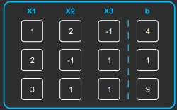

El método de eliminación por Gauss-Jordan es una técnica utilizada para resolver
sistemas de ecuaciones lineales. Este método es una variante del método de
eliminación, en el que se utiliza una combinación de operaciones elementales
de fila para reducir la matriz aumentada del sistema a una forma escalonada reducida.
•Escribe el sistema de ecuaciones en forma matricial, es decir, como una matriz
aumentada. La matriz aumentada se obtiene al colocar los coeficientes de las variables
y los términos constantes en una matriz, separados por una línea vertical.
•Realiza operaciones elementales de fila en la matriz aumentada para convertirla en unas
forma escalonada. Las operaciones elementales de fila incluyen intercambiar dos filas,
multiplicar una fila por un número no nulo y sumar un múltiplo de una fila a otra fila.
•Continúa realizando operaciones elementales de fila hasta que la matriz aumentada esté
en forma escalonada.
•Utiliza las operaciones elementales de fila para convertir la matriz escalonada en forma
reducida escalonada. La forma reducida escalonada es una forma especial de la forma
escalonada en la que los elementos por encima de cada pivote son cero y cada pivote es
igual a uno.
•Si hay variables libres, es decir, variables que no tienen un pivote correspondiente,
expresa estas variables en términos de las variables básicas.
Verifica la solución encontrada sustituyendo los valores de las variables en todas las
ecuaciones originales. Si todas las ecuaciones se cumplen, entonces has encontrado la
solución del sistema de ecuaciones.
Nuestro proyecto contiene un apartado para realizar el método de Gauss-Jordan y encontrar
los valores de las incógnitas de un sistema de ecuaciones lineales de hasta tamaño 6x6.
